Más allá de esa frontera quizá se alcance un grado de impopularidad en el pelotón que el líder del Mapei-Clas no desea arrostrar por razones de convivencia.
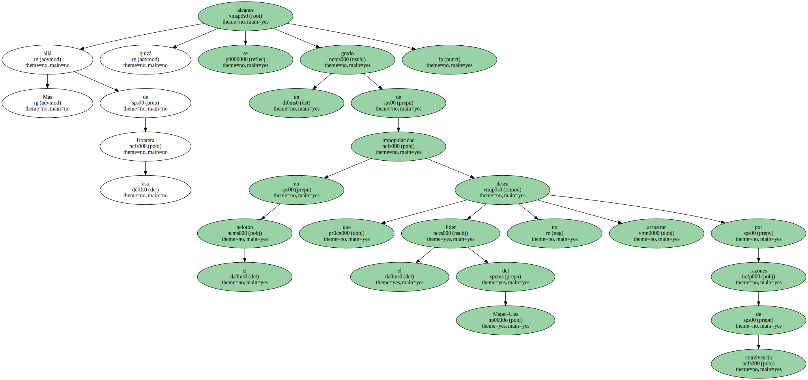Entre la superioridad y el abuso hay trazada una línea de cortesía que Rominger no traspasó ayer.
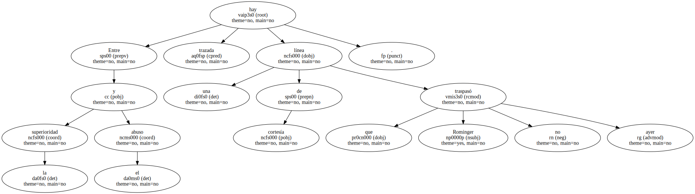Campeón y caballero , aunque en el deporte la caballerosidad sea un signo de debilidad de espíritu en el seno de la fortaleza de cuerpo.
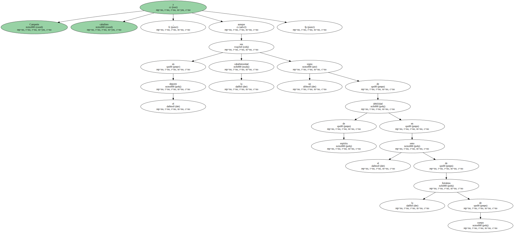A lo mejor Tony estaba aún conmovido por el nacimiento de su segundo hijo , al que ha llamado Robin.

Ese nombre de bandido generoso del bebé ha contagiado al papá , que no puede dejar de ser bandido para ganar la Vuelta , pero que se muestra generoso para ganar amigos.
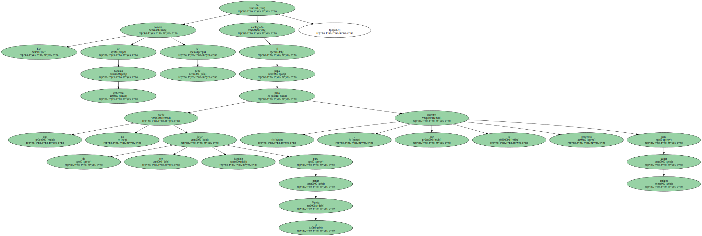En los últimos kilómetros de la subida a Ordino-Arcalís , todos aguantaban mientras él se refrenaba.
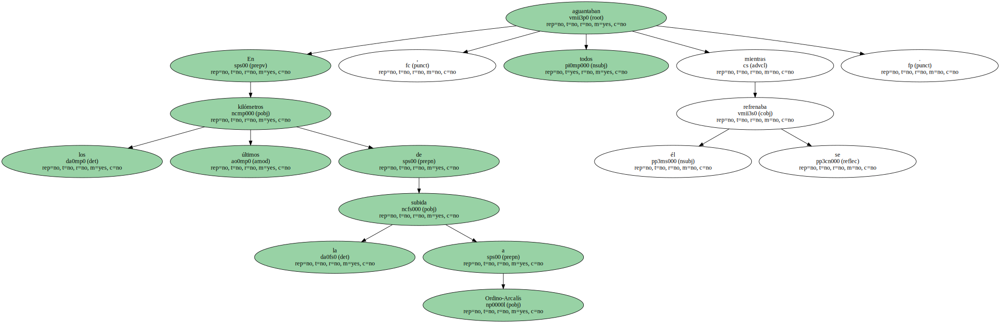Si se lo hubiese propuesto , habría alcanzado a Camargo y obtenido un botín de , al menos , y según el origen kilométrico del ataque , otros treinta segundos sobre Zarrabeitia y Zülle , la Doble Zeta del podio.
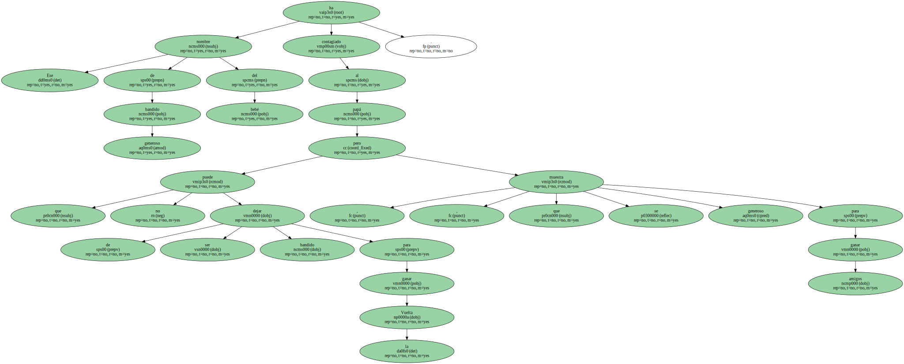El joven vasco y el joven suizo , especialmente el primero , aceptan de buen grado su suerte.

Zarrabeitia , líder del Banesto por delante de sus ilustres mayores , se está consagrando en esta Vuelta y no le pide más a la vida.
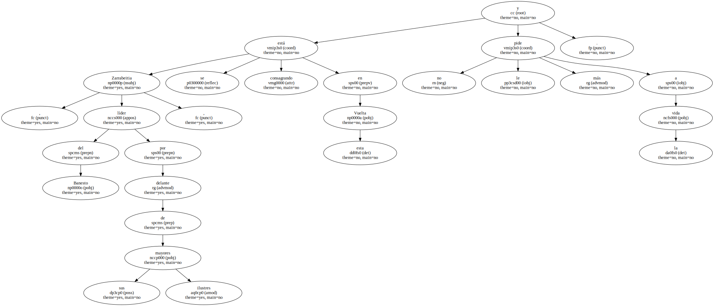Zülle , cabeza de la ONCE , capea el temporal.
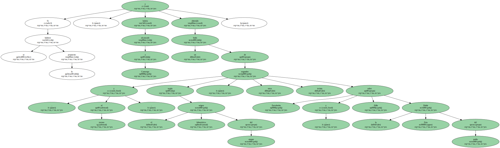O mucho nos equivocamos , o ambos se van a jugar al fallo ajeno el segundo puesto de la general.
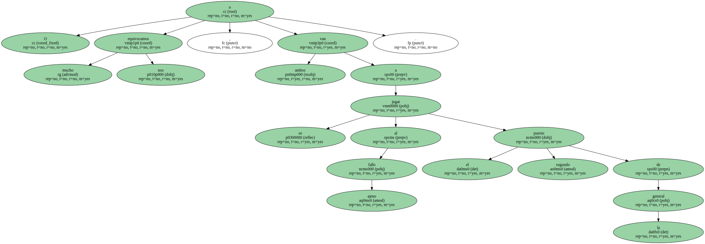Nos los imaginamos juntitos en las subidas , arañándose recíproca y alternativamente unos segundos en esos finales en los que se echa el resto " en persecución de Rominger " y acatando el juicio sumarísimo de la contrarreloj de Segovia.
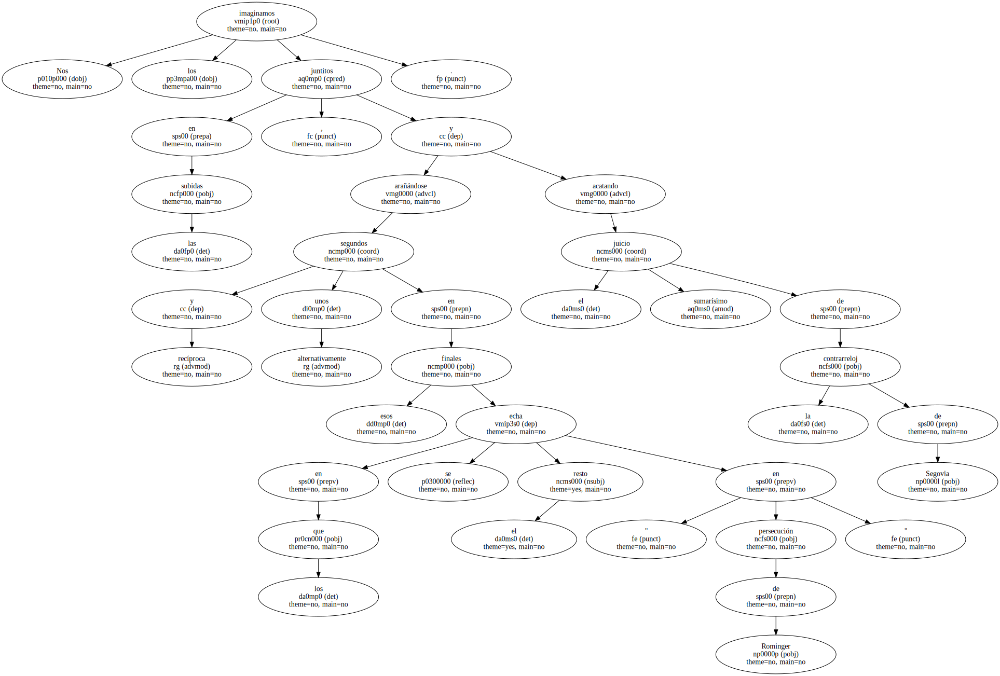Andorra , siendo más dura , resultó menos cruenta que Sierra Nevada porque Rominger lo quiso.
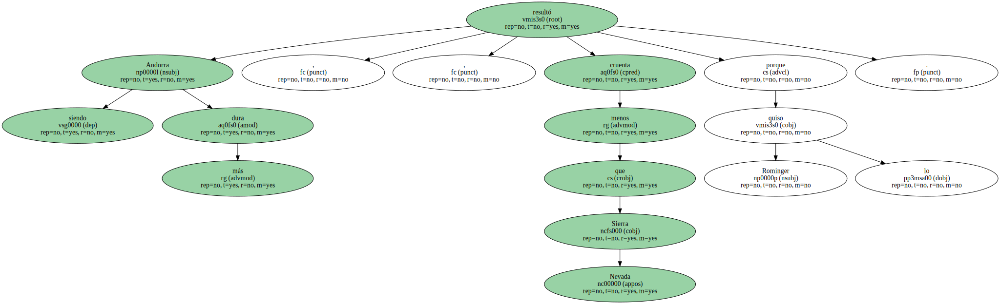